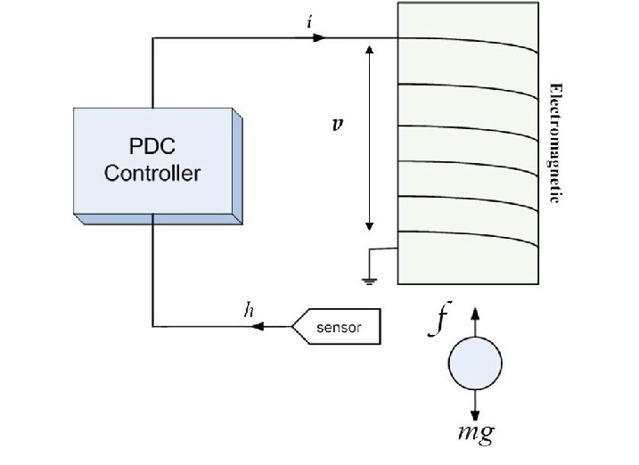

Capítulo 2 Introdução às técnicas de espaço de estados.
Os métodos de espaço de estados são importantes técnicas usadas em Engenharia de Controle para análise e projeto de sistemas. Eles são complementares às técnicas no domínio da frequência (função de transferência) e compreendem o que alguns autores chamam de “controle moderno”.
Neste capítulo introduzimos algumas noções básicas sobre o assunto.
2.1 O que é espaço de estados?
Um modelo de espaço de estados para um sistema linear invariante no tempo (SLIT) é um conjunto de equações diferenciais ordinárias simultâneas de 1a ordem. Por exemplo: \[\begin{aligned} \dot{x}_1 &= 2x_1-x_2+u\\ \dot{x}_2 &= -x1 \end{aligned}\]onde \(u\) é o sinal de entrada e os sinais \(x_1\) e \(x_2\) são chamados de estados do sistema. As duas primeiras equações são chamadas de equações de estado do sistema.
À equação de estados juntamos a equação de saída do sistema \[ y = 3x_1+4x_2 \] que descreve o sinal de saída \(y\) em função dos estados.
Isso é um pouco diferente do que você aprendeu em Controle I e ASL, onde os sistemas são representados por uma única EDO de ordem elevada, que contém apenas um sinal de entrada e um sinal de saída.
Em uma equação de estados temos várias equações diferenciais simultâneas em múltiplos sinais (funções do tempo) \(x_1\), \(x_2\), etc.
O número \(n\) de estados deve ser igual ao número de equações de estado. \(n\) é equivalente a ordem do sistema. Veremos depois que isso equivale a ordem da função de transferência do sistema.
Uma equação de estados substitui uma EDO de ordem \(n\) por \(n\) equações de ordem 1. Note entretanto que não conseguimos resolver essas equações de forma independente, devido à interdependência delas.
A representação de estados é uma forma alternativa de modelar matematicamente de um sistema. Ela não exclui a representação do sistema por função de transferência.
Observação: \[\begin{aligned} \frac{dx(t)}{dt} &= \dot{x}(t) = \dot{x}\\ \frac{d^2x(t)}{dt^2} &= \ddot{x}(t) = \ddot{x} \end{aligned}\]2.2 O que é estado?
Matematicamente, os estados funções do tempo intermediárias que precisam ser resolvidas para obtermos o sinal de interesse do sistema, isto é, o sinal de saída.
Fisicamente, os estados denotam grandezas físicas importantes, que determinam como o sistema evolui, mas não são necessariamente mensuráveis.
Um bom exemplo é o modelo físico de um gás. Em termodinâmica, a temperatura de um gás é uma medida importante que pode ser mensurada. No entanto, a teoria estabelece que a temperatura é uma função do grau de agitação molecular do gás, ou seja, é determinada a partir da velocidades de suas moléculas.
Contudo, uma amostra de gás contém um número muito grande de moléculas, não sendo possível medir a velocidade individual de cada uma, embora possamos estabelecer um modelo teórico que descreva como elas se movimentam.
Desta forma, no modelo de um sistema dinâmico de um gás, as velocidades indidividuais podem ser vistas como os estados do sistema, cuja evolução temporal é importante e passível de modelagem, mas a temperatura é efetivamente o sinal de saída, aquilo que realmente conseguimos medir macroscopicamente.
2.3 Sistemas LIT SISO
Para um sistema linear invariante no tempo de uma entrada \(u\) e uma saída \(y\), a representação padrão de estados é:
Derivada de um estado = combinação linear de todos os estados e da entrada.
Por exemplo: \[ \dot{x}_3 = -2x_1-3x_2-4x_5 + 10u \]
Para cada estado podemos ter uma combinação linear diferente, por exemplo: \[ \begin{aligned} \dot{x}_1 &= x_2\\ \dot{x}_2 &= x_3\\ \dot{x}_3 &= -2x_1-3x_2-4x_5 + 10u \end{aligned} \]
2.4 Representação matricial
O modelo acima pode ser representado de forma mais compacta se usarmos notação matricial:
Vetor de estados: \[ \mathbf{x}=\left[\begin{matrix}x_{1}\\x_{2}\\x_{3}\end{matrix}\right] \]
Derivada temporal do vetor de estados \[ \dot{\mathbf{x}}=\left[\begin{matrix}\dot{x}_1\\\dot{x}_2\\\dot{x}_3\end{matrix}\right] \]
Repare o uso de negrito para representar grandezas matriciais
O número de equações de estado (diferenciais) é igual ao número de variáveis de estado, que é igual a ordem do sistema.
A interpretação de ordem aqui é a mesma de “ordem” da equação diferencial
No nosso caso, vamos sempre considerar que o sistema é 1-entrada-1-saída (SISO) e assim, as matrizes de um sistema de ordem \(n\) tem, necessariamente, as dimensões:
- \(\mathbf{A}\): \(n\times n\) (quadrada de ordem \(n\))
- \(\mathbf{B}\): \(n\times 1\) (vetor coluna de \(n\) elementos)
- \(\mathbf{C}\): \(n\times n\) (vetor linha de \(n\) elementos)
- \(D\): \(1\times 1\) (escalar)
2.5 Sistemas LIT MIMO
Quando o sistema possui mais de uma entrada ou saída (SISO), a representação por espaço de estados muda ligeiramente. Apenas mudanças nas matrizes \(\mathbf{B}\) e \(\mathbf{C}\) são necessárias.
Para um sistema com \(m\) entradas e \(p\) saídas:
- A matriz \(\mathbf{B}\) deve ter \(m\) colunas
- A matriz \(\mathbf{C}\) deve ter \(p\) linhas
- O sinal de entrada \(u\) passa a ser um vetor coluna \(\mathbf{u}\), onde cada elemento é um sinal de entrada diferente, isto é \(\mathbf{u} = \begin{bmatrix}u_1 & u_2 & \ldots & u_m\end{bmatrix}^T\)
- O sinal de y \(u\) passa a ser um vetor coluna \(\mathbf{y}\), onde cada elemento é um sinal de de saída diferente, isto é \(\mathbf{y} = \begin{bmatrix}y_1 & y_2 & \ldots & y_p\end{bmatrix}^T\)
Se a ordem do sistema é \(n\), então a matriz \(\mathbf{A}\) permanece \(n\times n\).
Exemplo: este é um sistema de 2a ordem, 2 entradas e 3 saídas.
\[\begin{align} \dot{\mathbf{x}} &= \left[\begin{array}{rr} 0 & 1 \\ -7 & -6 \end{array}\right] \mathbf{x} + \left[\begin{array}{rr} 1 &0 \\ 2 &-3\end{array}\right]\mathbf{u}\\ \mathbf{y} &= \left[\begin{array}{rr}2 & 4\\ 1& 0\\ 0 &1\end{array}\right]\mathbf{x} + \left[\begin{array}{rr}1 & 0 \\0 & 0 \\ 0 & 0 \end{array}\right]\mathbf{u} \end{align}\]
2.6 Sistemas não-lineares
Sistemas não-lineares também possuem representação de estados. Na verdade, no estudo de sistemas não-lineares, a representação de estados é canônica, pois não existe uma representação universal do tipo função de transferência para sistemas não-lineares.
Para um sistema de ordem \(n\), com \(m\) entradas e \(p\) saídas, a representação é: \[ \dot{\mathbf{x}} = \mathbf{F(x,u)} = \begin{bmatrix}f_1(x_1,\ldots,x_n,u_1,\ldots, u_m) \\ f_2(x_1,\ldots,x_n,u_1,\ldots, u_m) \\ \ldots \\ f_n(x_1,\ldots,x_n,u_1,\ldots, u_m) &\end{bmatrix} \] onde \(\mathbf{F}\) é uma função vetorial com \(n\) elementos.
A equação de saída é: \[ {\mathbf{y}} = \mathbf{G(x,u)} = \begin{bmatrix}g_1(x_1,\ldots,x_n,u_1,\ldots, u_m) \\ g_2(x_1,\ldots,x_n,u_1,\ldots, u_m) \\ \ldots \\ g_p(x_1,\ldots,x_n,u_1,\ldots, u_m) &\end{bmatrix} \]
Exemplo: sistema MAGLEV

Equação de movimento (lei de Newton): \[ m\ddot{x} = mg - f(x,I) \]
Força magnética: \[ f(x,I) = \frac{kI^2}{(x+\mu)^2} \] Estados:
- Posição \(x\)
- Velocidade \(v = \dot{x}\)
ou: \[ \begin{bmatrix} \dot{x} \\ \dot{v}\end{bmatrix} = \begin{bmatrix} v \\ g - \frac{kI^2}{m(x+\mu)^2}\end{bmatrix} \]
A equação de saída é simplesmente \[ y = x \]
Note que \(g\), \(k\), \(m\) e \(\mu\) são constantes.
2.7 Equilíbrio
A idéia de equilíbrio é fundamental em sistemas. Fisicamente, um estado de equilíbrio é aquele no qual o sistema não evoloui no tempo, permanece parado, seus sinais constantes, sem variação temporal.
Em sistemas não-lineares definimos matematicamente como ponto de equilíbrio os valores fixos do vetor de estados \(\mathbf{x}_0\) e de entrada \(\mathbf{u}_0\) que anulam a função \(\mathbf{F(x,u)}\), isto é, satisfazem:
\[ \mathbf{F(x_0,u_0)} = \mathbf{0} \]
O equilíbrio de um sistema possui interpretação física importante e está intimamente relacionado à estabilidade do sistema.
Um sistema não linear pode ter vários pontos de equilíbrio.
Um sistema LIT possui sempre um único ponto de equilíbrio dado por \(\mathbf{x_0=0}\) e \(\mathbf{u_0=0}\).
Exemplo: sistema MAGLEV
Em equilíbrio o sistema está totalmente parado, \(v=0\). O cilindro é mantido a uma distância \(x_0\) do imã, sob uma corrente \(I_0\).
As equações de equilíbrio são: \[\begin{aligned} v &= 0\\ f(x_0,I_0) &= mg \end{aligned}\]Apicando a equação da força magnética, temos a relação detalhada: \[ \frac{kI_0^2}{(x_0+\mu)^2} = mg \Rightarrow kI_0^2 = mg(x_0+\mu)^2 \]
2.8 Linearização
Um modelo linearizado é um modelo que tenta aproximar a evolução temporal de um sistema não-linear próximo do ponto de equilíbrio, isto é, supondo que os estados \(\mathbf{x}(t)\) não diferem muito de \(\mathbf{x_0}\).
Modelos linearizados também são chamados de modelo de perturbação ou modelo de pequenos sinais.
\[ {\mathbf{x}} \approx \mathbf{x}_0+ \Delta \mathbf{x} \] com \(\Delta \mathbf{x}\) pequeno e \(\mathbf{x}_0\) o ponto de equilíbrio.
A maioria dos controladores que projetamos são lineares e o projeto deles é feito com base na aproximação linear do sistema.
Isso ocorre porque a teoria de sistemas lineares é bem consolidada: conseguimos resolver as equações analítica e numericamente. Para sistemas não lineares essa tarefa é muito mais complicada, quando não impossível.
Para linearizar um sistema, encontramos as aproximações em série de Taylor das funções \(\mathbf{F}\) e \(\mathbf{G}\), truncadas no termo linear, em torno do ponto de equilíbrio. \[\begin{aligned} \mathbf{F(x,u)} &\approx \mathbf{F(x_0,u_0)} + \mathbf{A\,\Delta x} + \mathbf{B\,\Delta u}\\ \mathbf{G(x,u)} &\approx \mathbf{G(x_0,u_0)} + \mathbf{C\,\Delta x} + \mathbf{D\,\Delta u} \end{aligned}\] onde as matrizes \(\mathbf{A}\), \(\mathbf{B}\), \(\mathbf{C}\) e \(\mathbf{D}\) são os seguintes Jacobianos. \[\begin{aligned} \mathbf{A} &= \left.\frac{\partial \mathbf{F}}{\partial \mathbf{x}}\right|_{\mathbf{x = x_0}, \mathbf{u=u_0}}\\ \mathbf{B} &= \left.\frac{\partial \mathbf{F}}{\partial \mathbf{u}}\right|_{\mathbf{x = x_0}, \mathbf{u=u_0}}\\ \mathbf{C} &= \left.\frac{\partial \mathbf{G}}{\partial \mathbf{x}}\right|_{\mathbf{x = x_0}, \mathbf{u=u_0}}\\ \mathbf{D} &= \left.\frac{\partial \mathbf{G}}{\partial \mathbf{u}}\right|_{\mathbf{x = x_0}, \mathbf{u=u_0}} \end{aligned}\]Exemplo: Sistema MAGLEV
\[ \mathbf{F}(x,v,I) = \begin{bmatrix} v \\ g - \frac{kI^2}{m(x+\mu)^2}\end{bmatrix} \] Temos então: \[\begin{aligned} f_1(x,v,I) &= v\\ f_2(x,v,I) &= g - \frac{kI^2}{m(x+\mu)^2} \end{aligned}\]O ponto de equilíbrio é \((x_0,0,I_0)\) que satisfaz: \[ kI_0^2 = mg(x_0+\mu)^2 \]
Os Jacobianos são: \[\begin{aligned} \mathbf{A} &= \left.\frac{\partial \mathbf{F}}{\partial \mathbf{x}}\right|_{x=x_0, v=0, I=I_0} = \begin{bmatrix}\frac{\partial f_1}{\partial x} & \frac{\partial f_1}{\partial v} \\ \frac{\partial f_2}{\partial x} & \frac{\partial f_2}{\partial v}\end{bmatrix}\\ \mathbf{B} &= \left.\frac{\partial \mathbf{F}}{\partial \mathbf{u}}\right|_{x=x_0, v=0, I=I_0} = \begin{bmatrix} \frac{\partial f_1}{\partial I} \\ \frac{\partial f_2}{\partial I}\end{bmatrix} \end{aligned}\] \[\begin{aligned} \frac{\partial f_1}{\partial x} &= 0\\ \frac{\partial f_1}{\partial v} &= 1\\ \frac{\partial f_2}{\partial x} &= \frac{2kI_0^2}{m(x_0+\mu)^3}=\lambda^2\\ \frac{\partial f_2}{\partial v} &= 0\\ \frac{\partial f_1}{\partial I} &= 0 \\ \frac{\partial f_2}{\partial I} &= \frac{2kI_0}{m(x_0+\mu)^2}=K_0 \end{aligned}\]Assim, os sinais do MAGLEV podem ser aproximados pela seguinte dinâmica:
\[\begin{aligned} x &\approx x_0 + \Delta x\\ v &\approx \Delta v \end{aligned}\]Onde os sinais auxiliares \(\Delta x\) e \(\Delta v\) são descritos pela equação de estados:
\[\begin{align} \begin{bmatrix} \Delta\dot{x}\\ \Delta\dot{v}\end{bmatrix} = \begin{bmatrix}0 & 1 \\ \lambda^2 & 0\end{bmatrix}\begin{bmatrix}\Delta x\\ \Delta v\end{bmatrix} + \begin{bmatrix}0\\ K_0\end{bmatrix}\Delta I \end{align}\]
\(\Delta I\) é a variação de corrente do imã em torno do valor de equilíbrio \(I_0\), \(\Delta I=I-I_0\).